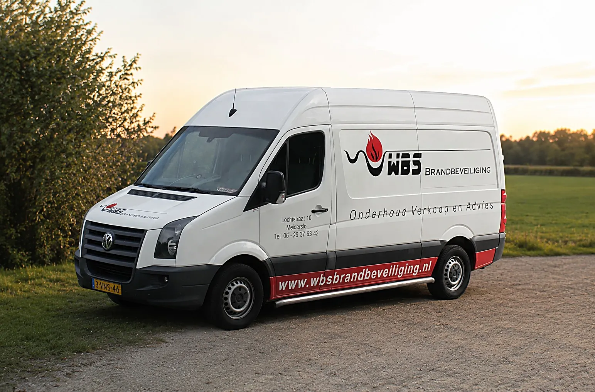
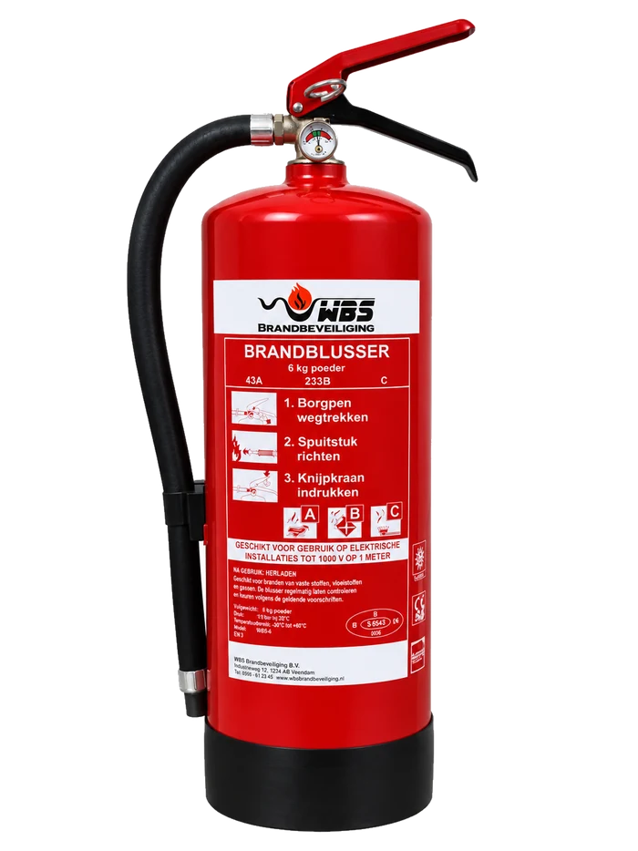

Je brandblussers gekeurd en op orde.
WBS onderhoudt blusmiddelen voor bedrijven. REOB-erkend en meer dan 1500 tevreden klanten.

Laat ons meekijken wat je nodig hebt
Mail welke middelen je hebt staan en waar je gevestigd bent. Je krijgt antwoord van ons zelf.
Neem telefonisch contact op
- Geert 06-29378342
- Sandy 06-55122876
- maandag t/m vrijdag, 08.30–17.00 uur
Waarom WBS
Wij houden de termijn bij
Je hoeft er zelf geen agenda voor bij te houden. Zijn je toestellen weer aan de beurt, dan melden wij ons.
Alles onder één dak
Blussers, haspels, noodverlichting, EHBO-middelen, ladders en elektrisch gereedschap. Eén partij, één bezoek, en REOB-erkend.
Je spreekt ons zelf
Geen callcenter, geen ticketnummer. Mail of bel je, dan heb je direct contact met ons.
De levensloop van een blusser
Elk toestel doorloopt dezelfde vier stappen. Wij houden bij waar dat van jou staat.

-
Periodieke controle
Elk jaar. Algehele staat en plaatsing.
-
Uitgebreid onderhoud
Elke vijf jaar. Het toestel gaat open en wordt van binnen beoordeeld.
-
Revisie
Elke tien jaar. Helemaal nagelopen en opnieuw gevuld.
-
Vervangen
Na twintig jaar, of eerder bij afkeuring.
We leveren alleen nog PFAS-vrij
Het PFAS-verbod raakt alleen schuimblussers; poeder en CO2 blijven zoals ze zijn. Bestaande toestellen mag je nog tot en met 2030 gebruiken, dus overhaast omhangen hoeft niet.
Verkoop van PFAS-houdende blussers mag nog tot oktober 2026, maar wij leveren ze al niet meer. Je zit er anders binnen een paar jaar opnieuw aan vast. Lees wat het verbod inhoudt.
Meest gestelde vragen
Wat heb ik nodig voor mijn bedrijf?
Dat hangt af van je pand, wat je er doet en wat er nu al hangt. Mail waar je gevestigd bent en welke middelen je hebt staan, dan kijken we mee en geven we aan waar eventuele tekortkomingen zijn.
Hoe vaak moeten mijn brandblussers gekeurd worden?
Voor brandblussers wordt meestal verwezen naar NEN 2559: die vraagt jaarlijks onderhoud door een REOB-gecertificeerde deskundige. Elke vijf jaar volgt uitgebreid onderhoud, elke tien jaar een revisie, en na twintig jaar wordt het toestel vervangen. Brandslanghaspels gaan elk jaar door de controle, en elke vijf jaar wordt de slang beproefd op de maximale voorgeschreven druk. Elektrisch gereedschap volgt NEN 3140; hoe vaak dat moet, hangt af van hoe intensief je het gebruikt.
Wat is REOB en waarom is dat belangrijk?
REOB staat voor Regeling Erkenning Onderhoud Blusmiddelen. Een erkend bedrijf werkt volgens vaste eisen en wordt daar zelf ook op gecontroleerd. Voor jou betekent het dat je onderhoud aantoonbaar goed is gedaan. Je verzekeraar, de gemeente of een inspecteur kan daarnaar vragen. Wij staan in het CCV-register onder nummer R000153388, beoordeeld door Kiwa FSS Certification.
Wat betekenen de PFAS-regels voor mijn blussers?
Het verbod geldt alleen voor schuimblussers; poeder en CO₂ bevatten geen PFAS. Toestellen die je al hebt hangen mag je gebruiken tot en met 31 december 2030, daarna niet meer. Verkoop van PFAS-houdende blussers mag nog tot 23 oktober 2026, maar wij leveren ze al niet meer. Moet je een blusser vervangen, dan krijg je van ons een PFAS-vrij model. Je oude toestellen nemen we mee en voeren we af als chemisch afval.
Werken jullie ook buiten de regio?
We werken vooral in Noord-Limburg en omgeving. Ben je daarbuiten gevestigd, laat het dan weten. In overleg is er vaak meer mogelijk.
Wat kost het?
Dat hangt af van hoeveel middelen je hebt en van welk type ze zijn. Je krijgt altijd eerst een prijsopgave, voordat we iets doen.
Staat je vraag er niet bij? Mail het ons, dan krijg je antwoord.